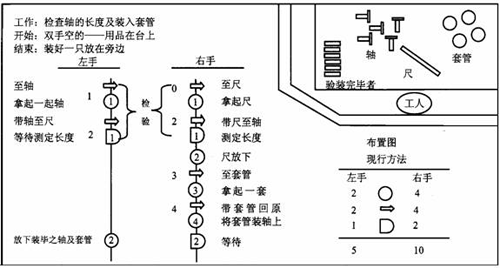
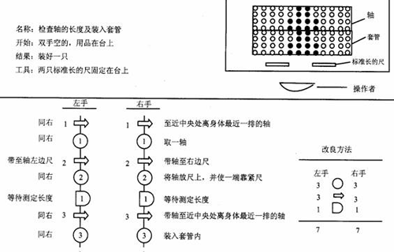
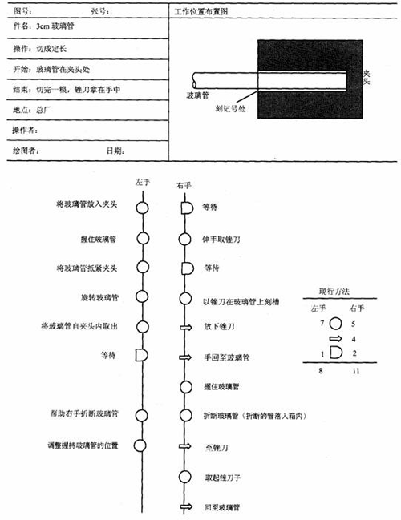
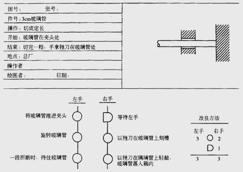

1 . 教学安排
2 . 操作分析的定义与类型
3 . 人机操作分析
4 . 联合操作分析
5 . 双手操作分析
 双手操作分析的意义与作用
双手操作分析的意义与作用
双手操作程序图的画法
双手操作程序图的分析要点
双手操作程序图实例分析
6 . 思考与练习题
 返回课程学习首页
返回课程学习首页
双手操作程序图实例分析
例如：检查轴的长度并装入套筒。
图6-16为现行方法的双手操作程序图。

图6-16 检查轴的长度及装入套管的现行方法双手操作程序图
从图中可以发现，现行方法的主要问题是：双手动作不对称，一手持物，另一只手往复动作，每次需要拿起与放下套筒，每次将尺重复的拿起、放下。
改进方法：取消一手持物，另一只手往复的无效动作。取消套筒拿起与放下的无效动作，改为将轴直接套入套筒。取消每次将尺重复的拿起、放下的无效动作，改为固定于工作台上的两把标准长度的尺。改进后的双手操作程序图如图6-17所示。

图6-17 检查轴的长度及装入套管的改良方法双手操作程序图
此改良方法不但使双手动作数目均减少，而且完全达到了双手同时对称动作的原则。改良方法中已取消了下列3种无效率的动作：
(1)一手持物，另一只手的往复动作；
(2)将套入的方法改变，使轴直接套入套筒，节省套筒拿起与放下的无效动作；
(3)改变原来用的普通尺为两标准长度的尺，并固定于台上，省去每次将尺重复的拿起、放下的动作。
例如：将玻璃管切成定尺。
图6-18为将玻璃管切成定尺的现行方法的双手操作程序图。

图6-18 将玻璃管切成定长的现行方法双手操作程序图
为了对现行方法进行改良，可进行如下的考查提问：
(1)所有重复动作是否尽可能予以取消？
在一般操作中所有重复动作应尽可能予以取消。此例现行方法中，玻璃管有向前推的动作，但亦有向后退的动作，很明显此为重复动作。又如锉刀，每次必须拿起、放下，此又为重复动作。
(2)是否需要在玻璃管上先作记号，而后待左手抵紧后再予刻划？
(3)为何不在玻璃管开始转动时即开始刻划?为何右手要等待？
(4)为何玻璃管必须抽出来才可折断，而不能在夹头内折断？
(5)为何玻璃管要抽出，至使折断后再放入夹头时，常产生对准困难？
(6)双手的动作是否能减少?且协调得更好？
上列问题的答案已如图6-19的改良方法中所示。从此例可看出夹头已重新设计，刻划已改在支持处的右边，使刻划容易；短端刻上深纹易折断，尤其无需将玻璃管抽出，用两手去折断，去掉将锉刀重复地拿起、放下的动作。双手动作的数目亦大大减少，且双手能配合得更好，符合双手同时对称操作的原则。

图6-19 玻璃管切成定长的改良方法双手操作程序图